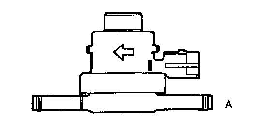
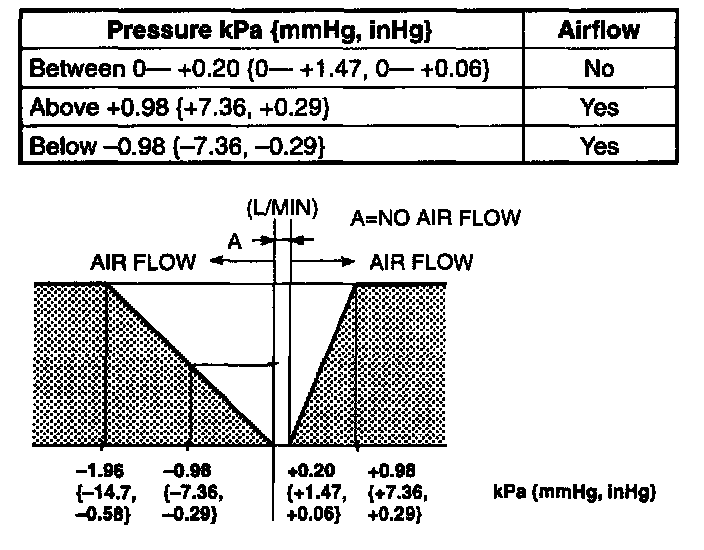
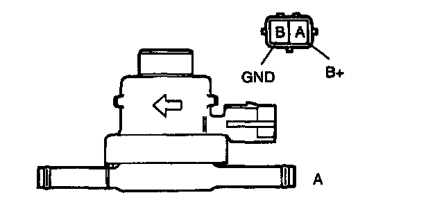
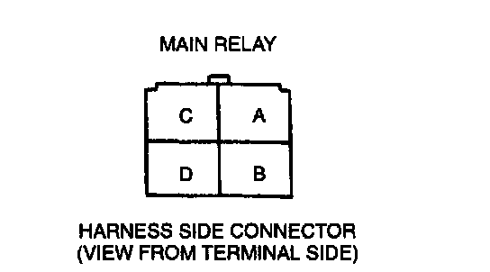

Fuel Tank Pressure Release Valve: Testing and Inspection
TANK PRESSURE CONTROL VALVE (TPCV) INSPECTIONSimulation Test
1. Carry out the "Evaporative Emission Control System Inspection".
2. If not as specified, perform the further inspection for the TPCV.
Airflow Inspection
NOTE:
- Perform the following test only when directed.
1. Disconnect the negative battery cable.
2. Remove the TPCV.


3. Apply pressure to port A and inspect airflow under the following conditions.

4. Apply battery positive voltage to the valve connector terminal A and apply pressure to port A, and verify that air flows smoothly.
5. If not as specified, replace the TPCV. If as specified but the Simulation Test is failed, inspect following:
Evaporative hose improper routing, kinks or leakage.
Open circuit
- Ground circuit (TPCV connector terminal B and PCM connector terminal 3U through common connector)

- Power circuit (TPCV connector terminal A and main relay connector terminal D through common connector)
Short circuit
- TPCV connector terminal B and PCM connector terminal 3U to ground
6. Connect the negative battery cable.